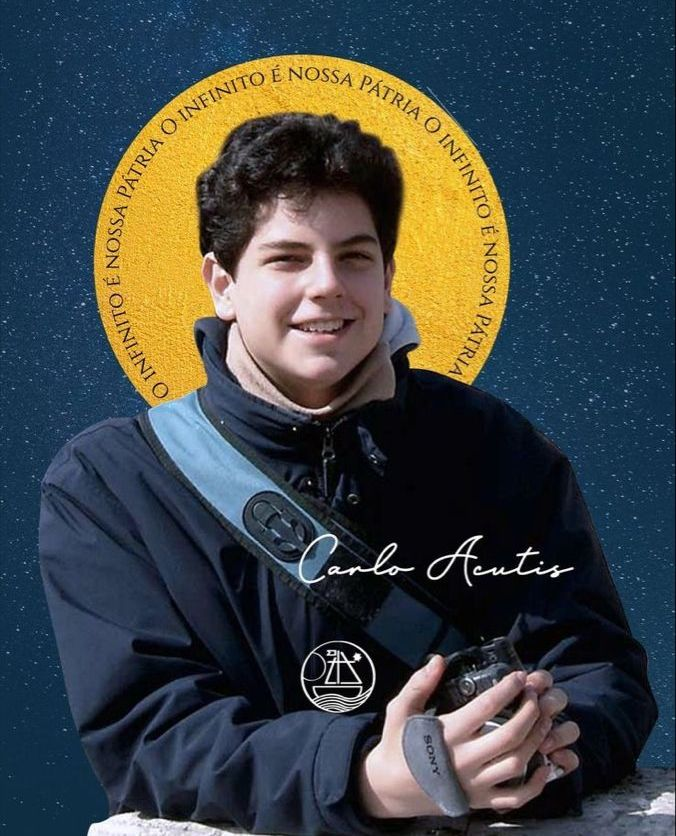

Carlo Acutis, após sua morte, tornou-se conhecido por intercessões e milagres atribuídos à sua oração, o que culminou em sua beatificação em 2018. O primeiro milagre atribuído à sua intercessão envolveu a cura de uma jovem brasileira, que sofria de uma doença grave, uma leucemia, e estava em estado terminal. De acordo com o testemunho, a jovem teria sido curada de forma inexplicável após rezar pedindo a intercessão de Carlo. O milagre foi reconhecido pela Igreja Católica e foi um dos motivos principais para sua beatificação. Outro aspecto que gerou grande devoção foi o fato de Carlo ter sido um grande devoto da Eucaristia. Ele acreditava profundamente no poder da comunhão eucarística e, em sua vida, procurava viver com pureza e dedicação à presença de Jesus na Eucaristia. Durante sua vida, Carlo tinha uma prática diária de receber a Eucaristia e incentivava seus amigos e familiares a fazerem o mesmo. Ele também se dedicou a divulgar milagres eucarísticos ao redor do mundo, criando um site para catalogá-los, o que o tornou um grande defensor e divulgador da fé eucarística. Além disso, a devoção de Carlo à Virgem Maria também foi notável. Ele tinha uma grande confiança em Nossa Senhora e acreditava que Ela intercedia por ele em muitos momentos de sua vida. A vida de Carlo é um testemunho do poder da oração e da intercessão de santos e beatos, que continuam a agir na vida de muitos até hoje. Estes milagres e intercessões, embora ainda modestos em número, são vistos como sinais claros da santidade de Carlo Acutis, confirmando a relevância de sua vida e testemunho para o mundo de hoje.
